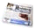

OPAC'ta kullanılan ikonlar
Materyal türü için kullanılan ikonlar:- basılı metin
- elyazması metin
 basılı müzik partisyonu
basılı müzik partisyonu elyazması müzik partisyonu
elyazması müzik partisyonu basılı harita
basılı harita- elyazması harita
 görüntü veya video
görüntü veya video müzik dışı ses kaydı
müzik dışı ses kaydı- müzik kaydı
 2 boyutlu grafik belge
2 boyutlu grafik belge elektronik belge
elektronik belge- çoklu ortam belgesi
 3 boyutlu nesne, eser, ...
3 boyutlu nesne, eser, ...
 makale
makale-  süreli yayın
Monografiler için materyal türünü gösteren ikonlar kullanılmıştır.
Ör. Monografi: basılı metin (kitap)